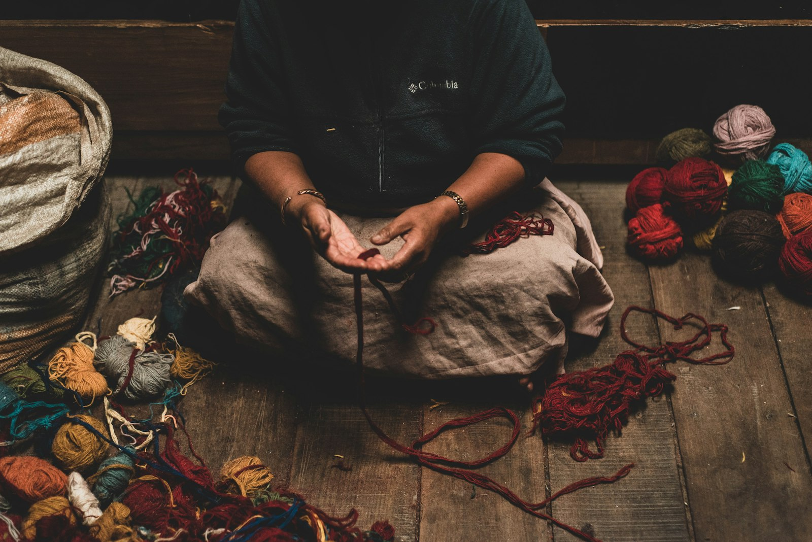
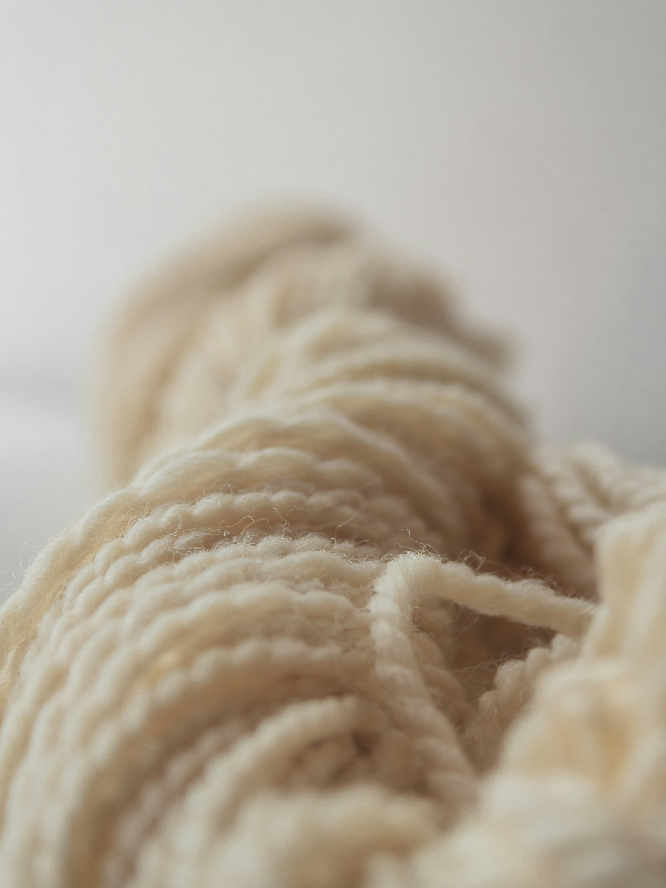

«Me gustaría comprar lana y no sé dónde». Este comentario apareció hace unas semanas en una de nuestras publicaciones de Instagram. Y no fue el único. La misma pregunta, con distintas palabras, nos llega una y otra vez: tejedoras que buscan hilo español, artesanas del fieltro que quieren saber de dónde viene su materia prima, diseñadoras que necesitan fibra trazable para sus colecciones.
La paradoja es brutal. España mantiene un rebaño de casi 16 millones de cabezas ovinas, con 109.756 explotaciones registradas en enero de 2025 (MAPA). Producimos más de 23.000 toneladas de lana al año — el 30% de toda la lana limpia de la UE. Pero si intentas comprar un ovillo de lana española con nombre de ganadero y territorio, te encuentras con un desierto.
Este post es nuestra respuesta. No un directorio (eso ya lo hemos preparado como recurso descargable), sino las 5 claves que necesitas para encontrar y elegir lana española de verdad. Para que no dependas de una lista, sino de tu propio criterio.
Mucha lana, imposible de encontrar
España fue durante siglos el monopolio mundial de la fibra fina. Hoy producimos lana, la exportamos en bruto —la mayoría sin lavar— y la recompramos transformada. Es como si un país con olivos vendiese la aceituna y comprase el aceite embotellado: por eso encontrar un ovillo con nombre de ganadero y territorio cuesta tanto.
¿Cuánto vale hoy la lana en bruto, por qué se ha vuelto casi un residuo y qué salidas tiene? Lo contamos en detalle en qué hacer con la lana de oveja, nuestra guía para ganaderos. Aquí vamos a lo tuyo: cómo encontrar y elegir lana española de verdad.
5 claves para encontrar (y elegir) lana española de verdad

El eslabón más roto de la cadena lanera española es el de la transformación. Quienes lo están reabriendo son los que más merece la pena conocer.
1Busca trazabilidad, no solo «made in Spain»
Aquí está la trampa más común: un hilo puede estar «hilado en España» con fibra importada de Nueva Zelanda o Uruguay. Eso no lo convierte en lana española.
La trazabilidad real tiene tres capas:
- Origen de la fibra — ¿De qué rebaño sale? ¿Qué raza es? ¿En qué territorio pasta?
- Transformación — ¿Dónde se lava, se carda y se hila? ¿En España o se envía fuera y vuelve?
- Marca — ¿Quién está detrás? ¿Es el propio ganadero, una cooperativa, un intermediario?
Cuando un proyecto te puede decir «esta lana es de ovejas merinas que pastan en la dehesa extremeña, lavada en el obrador de Hervás y cardada a mano», estás ante trazabilidad real. Cuando solo dice «lana merino 100% natural», estás ante marketing.
Un dato que pocos conocen: no existen datos públicos en España desglosados por raza, ni clasificación nacional por finura, ni volúmenes de transformación local frente a exportación. Los últimos datos macro del MAPA son de 2021. Esta opacidad es parte del problema: lo que no se mide no se gestiona. Y por eso la trazabilidad que ofrecen los proyectos independientes es aún más valiosa.
Qué hacer: antes de comprar, pregunta tres cosas — ¿de qué raza es?, ¿dónde se ha transformado?, ¿puedo conocer al ganadero? Si te pueden responder las tres, estás en buenas manos.
2Conoce los tres eslabones de la cadena
La cadena lanera tiene una estructura que, una vez la entiendes, te permite navegar el sector con mucha más claridad.
Eslabón 1: Ganadería — Los rebaños. En España predomina el merino (fibra fina, 22-26 micras), pero hay razas autóctonas como la churra (lana gruesa, ideal para alfombras y fieltro denso), la latxa (País Vasco, doble propósito con leche), o razas insulares canarias con fibra única.
Eslabón 2: Transformación — Lavaderos, cardadoras, hilanderías. Este es el eslabón roto en España. Quedan muy pocos transformadores nacionales, y la mayoría de la lana se exporta en bruto precisamente porque no hay dónde procesarla. Las iniciativas que están reabriendo este eslabón son, posiblemente, las más importantes del sector.
Eslabón 3: Producto final — Artesanos, talleres, marcas. Los que convierten el hilo en pieza: tejedoras, fieltradoras, diseñadoras textiles. Muchos de ellos trabajan ya con fibra española, pero les ha costado encontrarla.
El eslabón 2 es el cuello de botella: la mayoría de la lana sale del país sin transformarse y vuelve convertida en producto.
Qué hacer: identifica qué eslabón te interesa. Si tejes, necesitas transformadores que vendan hilo. Si haces fieltro, puedes trabajar directamente con lana cardada de cooperativas. Si diseñas, busca proyectos integrados que cubran los tres eslabones.
3Entiende las razas y sus cualidades
No toda la lana es igual, y no toda la lana española es merino. Conocer las razas te permite elegir la fibra adecuada para cada proyecto.
| Raza | Micras | Tacto | Ideal para | Territorio |
|---|---|---|---|---|
| Merino español | 22-26 | Suave, fino | Prendas sobre la piel | Extremadura, CyL, CLM |
| Churra | 28-35 | Grueso, resistente | Tapices, alfombras, fieltro | Castilla y León |
| Latxa | 30-38 | Rústico, con carácter | Fieltro, piezas rústicas | País Vasco, Navarra |
| Razas insulares | Variable | Único | Arte textil, fieltro artístico | Canarias |
Un apunte técnico: el merino australiano tiene una finura media de 20,9 micras frente a las 24 del español. La diferencia es real, pero no justifica un precio 14 veces menor. Lo que falta en España no es calidad de fibra: es infraestructura de clasificación.
Qué hacer: no busques «la mejor lana» en abstracto. Pregúntate qué vas a hacer con ella. Para un jersey suave, merino. Para un bolso de fieltro resistente, churra. Para una pieza con carácter territorial, latxa o canaria.
4Distingue los modelos de compra
No es lo mismo comprar en una tienda online que comprar directamente a una cooperativa. Cada modelo tiene ventajas distintas.
Cooperativas y ganaderos con marca propia — Compras directamente al origen. El margen se queda en el territorio. Suelen ofrecer lana en vellón, cardada o en hilo básico. DehesaLana, por ejemplo, trabaja con merino de dehesa extremeña con transformación propia en su obrador de Hervás.
Hilanderías artesanales — Compran fibra a ganaderos y la transforman en hilo listo para tejer. El valor añadido está en el procesado: lavado, cardado, hilado, teñido. Son el eslabón que faltaba. dLana está construyendo una mini-spin mill con capacidad para 1.000-2.000 kg/mes — un proyecto de relocalización industrial a escala artesanal.
Talleres con producto final — Venden piezas terminadas (madejas teñidas, fieltro, prendas). El precio es más alto porque incluye el trabajo artesanal completo. Ideal si buscas algo listo para usar o regalar.
Tiendas online especializadas — Algunas seleccionan y comercializan lana española junto con otras fibras: Lana y Telar (Sevilla), Don Ovillo (Terrassa, 100% Made in Spain). Cómodas, pero pregunta siempre por el origen de la fibra, no solo del hilado.

Madeja de lana natural sin teñir. La trazabilidad empieza en una etiqueta que diga raza, territorio y nombre del transformador.
Qué hacer: si tu prioridad es el impacto territorial, compra a cooperativas o hilanderías que trabajen directamente con ganaderos locales. Si buscas variedad y comodidad, las tiendas online que documentan el origen son una buena opción.
5Valora el precio justo (y entiende por qué cuesta lo que cuesta)
Un ovillo de lana española artesanal puede costar 18-25 € por 100 gramos. Comparado con un ovillo industrial de 3 €, parece caro. Pero la comparación es tramposa.
El margen no es abuso: es el coste real de transformar una materia prima que España exporta en bruto por céntimos en un producto con identidad y trabajo artesanal detrás. Y hay que sumar la regulación: la normativa SANDACH (Real Decreto 1528/2012) obliga a que los vellones sucios se transporten en vehículos certificados a lavaderos registrados. Eso añade costes logísticos que la artesana no puede evitar.
Cuando compras hilo español a 25 €/kg estás pagando un precio justo. Cuando compras hilo industrial importado a 30 €/kg (que es lo que cuestan muchas marcas «premium» internacionales como Malabrigo o Brooklyn Tweed), estás pagando lo mismo pero nada se queda en el territorio.
Qué hacer: compara con lo que pagarías por una marca premium internacional. Los precios son similares, pero con lana española el impacto se queda aquí. Y el ganadero, que hoy pierde dinero cada vez que esquila, empieza a ver sentido en conservar su rebaño.
Tres sitios donde comprar lana española de verdad
De los trece proyectos que hemos mapeado en el directorio, destacamos tres a los que puedes comprar fibra trazable hoy, cada uno con un modelo distinto.
🐑DehesaLana · Cooperativa ACTYVA
Compras merino de ganadería extensiva con la cadena entera detrás: del rebaño al hilo, todo en el mismo territorio. Nacida en 2015 dentro de la cooperativa de economía social ACTYVA, vende producto con nombre de origen —ideal si quieres saber exactamente de qué dehesa viene tu lana.
🧶dLana
La primera tienda de España dedicada en exclusiva a lana autóctona. Aquí compras hilo merino con el sello oficial «Lana 100% Autóctona» y trazabilidad documentada (origen, lavado e hilado). Si quieres empezar sobre seguro y con certificación, es la puerta de entrada más cómoda.
✋Hilandia
Para un proyecto especial: hilo hilado completamente a mano, con rueca, y teñido con tintes naturales. Producción pequeña y artesanal —no es lana de catálogo, es pieza con historia, donde el proceso importa tanto como el resultado.
¿Quieres conocer los trece? Hemos preparado un directorio completo con fichas detalladas de cada proyecto, un mapa de España con su ubicación y la cascada de valor completa del sector.
Directorio de Lana Española
13 iniciativas con ficha completa, mapa y cascada de valor. PDF gratuito para tejedoras, fieltradoras, diseñadoras textiles y curiosos del oficio.
Descargar directorio →Nuevo · Conecta Lana
¿Tienes lana española o la buscas? Te ponemos en contacto
Conecta Lana es el punto de encuentro entre quien tiene lana española y quien la necesita —para textil o para el campo—. Tú te apuntas en dos minutos, nosotros buscamos el encaje y os presentamos. Gratis y sin comisión por la lana.
Entrar en Conecta Lana →Errores comunes al comprar lana española
- 🚫 Confundir «lana merino» con merino español. «100% merino» no dice nada del origen. La mayoría de la lana merino del mercado es australiana o sudamericana. Pregunta siempre: ¿merino de dónde?
- 🚫 Comprar solo por precio sin preguntar procedencia. Un ovillo barato con etiqueta bonita puede ser fibra importada ovillada en España. El precio no garantiza origen, pero la trazabilidad sí.
- 🚫 Ignorar la normativa SANDACH. Si compras lana sucia directamente a un ganadero, ten en cuenta que la regulación europea clasifica el vellón como subproducto animal. Los proyectos del directorio ya gestionan esto por ti: te venden lana lavada, cardada o hilada, cumpliendo la normativa.
- 🚫 Pensar que «artesanal» automáticamente significa caro. Una madeja artesanal española de 100 g a 20 € no es más cara que muchas marcas industriales premium que cuestan 15-18 € por la misma cantidad. La diferencia es que sabes de dónde viene — y que tu compra mantiene un rebaño y un oficio vivos.
- 🚫 No planificar la estacionalidad. La lana artesanal tiene tiempos de producción reales. Los esquileos son entre abril y junio, el procesado lleva semanas o meses. Si quieres lana de temporada para un proyecto de otoño-invierno, contacta antes de mayo. La paciencia forma parte de la experiencia.
Hoja de ruta: 4 semanas para empezar con lana española
Cuatro semanas que separan a la mayoría de tejedoras del primer proveedor de lana española con nombre, cara y territorio.
Semana 1 · Investiga → Lee este post, descarga el directorio y marca 3-4 proyectos que te interesen por zona, raza o modelo. Consulta también Ruta Lanera (rutalanera.com) para festivales cercanos. Resultado: una lista corta personalizada.
Semana 2 · Contacta → Escribe un email o DM a 2-3 proyectos. Pregunta qué tienen disponible, en qué formato y cuándo es el próximo esquileo. La mayoría responde encantada: están deseando que alguien pregunte. Resultado: conversación abierta con al menos un proyecto.
Semana 3 · Prueba → Pide una madeja o un lote pequeño de prueba. Tócala, huélela, trabájala. La lana española tiene un tacto y un olor que la industrial no tiene. Si te pilla cerca, asiste a una feria: Love Yarn Madrid (febrero), Sevilla Teje (abril), Festival de la Lana de Canarias (mayo) o el Día Europeo de la Lana (9 de abril). Resultado: primera experiencia con fibra nacional.
Semana 4 · Comparte → Publica tu experiencia. Etiqueta al proyecto del que compraste. Menciona el origen y la raza. Cada vez que alguien comparte lana española en redes, otra persona descubre que existe. Resultado: la cadena crece.
Al final de estas cuatro semanas tendrás algo que la mayoría de tejedoras y artesanas del fieltro no tienen: un proveedor de lana española con nombre, cara y territorio detrás.
Preguntas frecuentes
¿La lana española es más cara que la importada?
¿Puedo comprar lana española online?
¿Qué raza de lana me conviene si tejo a dos agujas?
¿Hay lana española para fieltro?
¿Dónde puedo tocar y probar la lana antes de comprar?
Conclusión: la lana está, los proyectos están, ahora estás tú
Comprar lana española no es solo una decisión de compra. Es un acto de reconstrucción. Cada madeja con nombre de ganadero y territorio detrás es un eslabón que se recoloca en una cadena que llevaba décadas rota.
La lana está ahí — 23.000 toneladas al año. Los proyectos están ahí — al menos trece que hemos mapeado. La pregunta «no sé dónde comprar» ya tiene respuesta.
Ahora la pregunta eres tú.
Descarga el directorio completo →
Y si lo que quieres es un análisis concreto de tu proyecto — comunicación, propuesta de valor, circularidad y oportunidades — te ofrecemos un Diagnóstico 3D. Una sesión donde miramos tu taller en profundidad y te devolvemos un informe con qué palancas activar primero.
¿Estás al otro lado? Si tienes ovejas y la lana se te acumula, no la tires: tiene cinco salidas reales —textil, agrícola, aislamiento, fieltro y conectar con quien la busca—. Te las contamos en qué hacer con la lana de oveja.